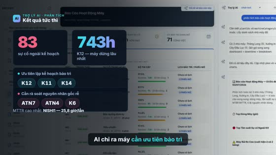
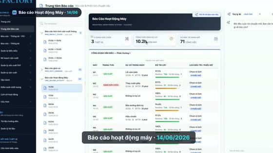

Biến một luồng thao tác thật trên phần mềm thành một video demo bóng bẩy: footage thật + camera nhấn nhá + overlay số liệu sắc nét + giọng đọc tiếng Việt + nhạc nền — tất cả tái tạo được bằng code.
HyperFrames không sinh video từ ảnh bằng AI. Nó là bộ dựng HTML → MP4: điều khiển camera ảo, overlay đồ hoạ, caption, âm thanh trên một lớp nền. Vậy phần "nền" — chuyển động thật của phần mềm — ta lấy từ đâu? Playwright quay lại chính app thật.
Bảy chặng, mỗi chặng tạo ra một artifact đưa vào chặng sau. Narration là "xương sống" — thời lượng giọng đọc quyết định nhịp cắt footage.
Không cần API key trả phí. Giọng đọc dùng edge-tts miễn phí; transcription/render đều chạy local.
npm i playwright && npx playwright install chromiumpip install edge-tts — giọng vi-VN-HoaiMyNeural (nữ, vui tươi)npx hyperframes@0.7.10 khi cầnĐăng nhập một lần, lưu storageState ra auth.json để các lần sau bỏ qua login. Dò đúng selector cho từng thao tác.
// login-explore.mjs — đăng nhập, lưu session, dump selector const ctx = await browser.newContext({ viewport:{width:1600,height:900} }); await page.goto(BASE + '/sign-in'); await page.locator('mat-select').click(); // chọn tổ chức await page.locator('mat-option', {hasText:/nois/i}).click(); await page.locator('#email').fill(EMAIL); await page.locator('#password').fill(PASS); await page.locator('button', {hasText:/ĐĂNG NHẬP/}).click(); await ctx.storageState({ path: 'auth.json' }); // ← tái dùng session
Hỏi agent đúng câu trong kịch bản, chờ tới khi trả lời ổn định rồi lấy nguyên văn. Chính con số thật này sẽ dẫn dắt narration & overlay.
answer.txt — trích số liệu: 83 sự cố, K12 743h, NISHI1 MTTR 25.8h…
Quay ở 1920×1080 full-bleed (không viền browser — hợp TV), chèn con trỏ chuột giả, và ghi lại mốc thời gian từng phase để lát cắt.
// context có recordVideo + init-script con trỏ giả ctx = await browser.newContext({ viewport:{width:1920,height:1080}, recordVideo:{ dir:'video', size:{width:1920,height:1080} } }); // con trỏ giả bám theo mouse event của Playwright await ctx.addInitScript(() => { const c = document.createElement('div'); c.id='__cur'; /* svg mũi tên, position:fixed, z-index max */ document.addEventListener('mousemove', e => c.style.transform=`translate(${e.clientX}px,${e.clientY}px)`, true); }); await page.mouse.move(x,y,{steps:30}); // con trỏ lướt mượt tới đích

Chuyển WebM → MP4 seekable, cắt từng beat và chỉnh tốc độ khớp với thời lượng narration, rồi ghép thành một footage.mp4.
# WebM → MP4 30fps, keyframe dày (seek mượt trong HyperFrames) ffmpeg -i page.webm -vf "fps=30,scale=1920:1080" \ -c:v libx264 -g 30 -pix_fmt yuv420p full.mp4 # Cắt 1 beat + chỉnh tốc độ — LƯU Ý: -ss/-t đặt TRƯỚC -i thì setpts mới ăn ffmpeg -ss 31 -t 200.8 -i full.mp4 \ -vf "setpts=(PTS-STARTPTS)/44.62,fps=30" -an proc.mp4 # ~40× nhanh # Ghép các beat lại ffmpeg -f concat -i list.txt -movflags +faststart footage.mp4
Kịch bản tiếng Việt, giọng nữ vui tươi. Keyword tiếng Anh phiên âm cho thuận tai người Việt.
ffprobe) để dựng timeline# giọng nữ VN, vui tươi, hơi nhanh python -m edge_tts --voice vi-VN-HoaiMyNeural \ --rate=+6% --text "..." --write-media vo.mp3
Đặt từng câu đúng mốc bằng adelay, thêm nhạc nền âm lượng thấp, chống clip bằng alimiter.
ffmpeg -i vo01.mp3 … -i vo10.mp3 -stream_loop -1 -i bgm.wav \ -filter_complex " [0]adelay=400|400[a0]; … [9]adelay=55000|55000[a9]; [10]volume=0.11,afade=out:st=59.5:d=2.5[bg]; [a0]…[a9][bg]amix=inputs=11:normalize=0[mx]; [mx]alimiter=limit=0.95[out]" -map "[out]" master.m4a
HyperFrames: footage là <video> nền, camera ảo zoom bằng cách tween #video-wrap, overlay card sắc nét + caption, và một <audio> master.
<!-- footage nền + audio master --> <div id="video-wrap"> <video src="assets/footage.mp4" muted playsinline data-start="12.5" data-duration="39.5" data-track-index="1"></video> </div> <audio src="assets/master.m4a" data-start="0" data-duration="62"></audio> // camera ảo: chỉ tween WRAPPER, không tween video const cam={s:1,x:0,y:0}; tl.to(cam,{ s:1.2, x:-170, onUpdate:() => vw.style.transform=`translate(${cam.x}px,${cam.y}px) scale(${cam.s})` }, 27);
# render ra MP4 npx hyperframes@0.7.10 render . -o renders/demo.mp4 --fps 30
snapshot --at 4,22,42,56 soi bố cục trước; lint phải sạch; kiểm tra audio (volumedetect) không clip.Những chỗ tốn thời gian nhất — biết trước để khỏi vấp.
Playwright điều khiển mouse ảo, recordVideo không hiện con trỏ. Phải tự chèn 1 div con trỏ bám theo mousemove.
Cần sourceRes ≥ renderRes × zoom. Quay ở 2× viewport, hoặc rebuild vùng zoom bằng HTML (chữ vector zoom bao nhiêu cũng nét).
Đặt -ss/-t trước -i (input-seek) thì setpts mới đổi tốc độ đúng. Đặt sau -i sẽ hỏng.
API hay lỗi chập chờn (rate-limit). Gọi qua CLI, xoá file rỗng & retry với backoff, giãn cách giữa các câu.
Renderer seek từng frame → callback đổi nội dung có thể không chạy. Chỉ dùng tween opacity để bật/tắt phần tử.
Video phải muted playsinline, audio để riêng. Animate #video-wrap chứ không animate kích thước thẻ video.
Đoạn AI reasoning ~200s nén còn ~4–5s (setpts ~40×). Giữ nhịp cho phần "hỏi" & "kết quả".
Tiêu đề lớn dễ wrap xấu. Nới max-width/bớt padding + white-space:nowrap cho cụm cần đi liền.